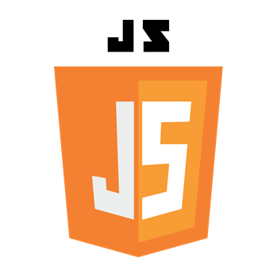
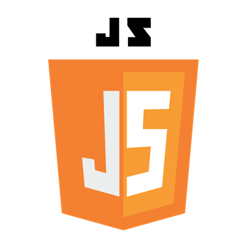

Soy un desarrollador de aplicaciones multiplataforma recientemente graduado con una sólida formación en la creación de soluciones tecnológicas innovadoras.
Durante mis estudios en Desarrollo de Aplicaciones Multiplataforma (DAM), adquirí una amplia gama de habilidades técnicas y prácticas, incluyendo el desarrollo de aplicaciones móviles y web, así como el diseño y gestión de bases de datos. Mi pasión por la tecnología y la resolución de problemas me impulsa a seguir aprendiendo y creciendo en este campo dinámico.
Al finalizar mis estudios superiores en DAM, mientras buscaba ofertas para incorporarme al mercado laboral, he estado ampliando mis conocimientos en lenguajes de programación demandados, como Python. Esto lo he logrado a través de tutoriales, videos y practicando de forma autodidacta, desarrollando proyectos por mi cuenta para mejorar mis habilidades.
- Durante el curso de mi grado en DAM, tuve la oportunidad de realizar mis prácticas en Xàtiva, en una pequeña empresa llamada Mibbo, donde conocí a grandes profesionales de diversos campos. Esta experiencia fue muy enriquecedora, ya que pude aprender de expertos en distintas disciplinas y mejorar mis habilidades técnicas. Mis responsabilidades en la empresa consistían principalmente en utilizar React Native para desarrollar aplicaciones móviles y diseños de interfaz, así como colaborar en el mantenimiento y actualización de diversas páginas web que estaban a su cargo.
- Por mi cuenta, tras finalizar el grado de DAM, he continuado mi formación de manera autodidacta, profundizando en Python. He desarrollado varias aplicaciones prácticas, lo que me ha permitido adquirir experiencia en la programación y en la resolución de problemas reales. Además, esta autoformación me ha proporcionado una comprensión más sólida de conceptos avanzados, como el manejo de bases de datos, la creación de interfaces de usuario y la integración de servicios externos, entre otros.


 


HTML
- Aprendí HTML en DAM
- Desde entonces lo he usado de forma puntual para hacer páginas webs
CSS
- Aprendí CSS en DAM
- Me gustaría saber más de diseño ya que no lo he utilizado apenas en el ciclo
MySQL
- Aprendí MySQL en DAM
- Es mi gestor de base de datos preferido, ya que es simple y la mayoría de servidores le dan soporte
PHP
- Aprendí PHP en DAM
- Aunque no he tenido una experiencia extensa con PHP, lo considero un lenguaje muy potente y flexible, especialmente en el ámbito del desarrollo web.
Java
- Aprendí JAVA en DAM era el lenguaje principal que usamos
- Es el lenguaje con el que más a gusto me siento, gracias a él pude aprender Android
Android
- Aprendí Android en DAM
- Me parece un lenguaje que anima al programador a aprender más y más ya que hoy en día los smartphones están en todos lados
JavaScript
- Aprendí JS en DAM
- Lo use durante el primer año del ciclo
Python
- Aprendí Python por libre
- Me parece un lenguaje realmente cómodo para hacer cualquier cosa, desde scripts pequeños hasta cosas muy grandes
- Actualmente intento aprender haciendo pequeños proyectos
Node JS
- Aprendí node en DAM
- Lo utilize bastante durante el segundo año del ciclo